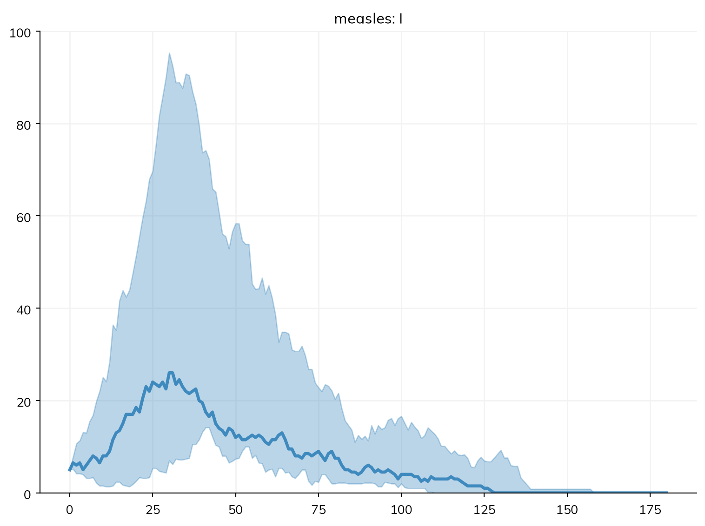

A study with thousands of runs, or a model that others use through a web page, needs more than a laptop and a notebook. Starsim is plain Python, so it runs anywhere Python does: on one large computer, on a cluster, or behind a dashboard. This page covers moving an analysis from a notebook into a script, and then each of these. Making many sims and comparing them is in Scenarios; this page is about where they run.
From a notebook to a script
An analysis that will be run again (by you next month, by a colleague, or on another computer) is best kept as a script rather than a notebook: inputs explicit, the model made by a function, and the results saved with what is needed to make them again. A script that runs sims in parallel puts the work under if __name__ == '__main__':, so that the worker processes, which import the script, don’t start the analysis again (this is required on Windows and macOS):
# measles_campaign.pyimport sciris as scimport starsim as ssdef make_sim(coverage=0.5, seed=1):""" The measles model, with a campaign on day 30 """ S, I, R = ss.states('S I R') beta = ss.par(1.9) infection = S >> I @ beta*I recovery = I >> R @ ss.days(8) measles = ss.Disease(infection, recovery, init=dict(R=0.9), init_n=dict(I=5)) campaign = ss.vaccinate(efficacy=0.95, coverage=coverage, at=ss.days(30))return ss.Sim(measles, interventions=campaign, total_pop=20_000, stop=ss.days(180), solver='binomial', rand_seed=seed, label=f'Coverage {coverage}', verbose=0)if__name__=='__main__': sims = [make_sim(coverage) for coverage in [0, 0.25, 0.5, 0.75]] msim = ss.parallel(sims, n_runs=100) msim.to_df(quantiles=[0.025, 0.5, 0.975]).to_csv('measles_campaign.csv', index=False) # The results, as quantiles over the runs sc.savejson('measles_campaign_info.json', dict( # What is needed to make them again starsim = ss.__version__, git = sc.gitinfo(__file__), date = sc.getdate(), ))
Keep the computation and the presentation apart: a script (or a cluster job) saves tables, and a notebook makes the figures from them, so a figure can be changed without running everything again. Record the version of Starsim and of your own code (sc.gitinfo() gives the commit), the data, the seeds, and the parameter values; a saved table with these is reproducible long after a saved sim (a pickle, which needs the same versions of the code to load) has stopped loading. Check one run and one small batch before a large one.
On one large computer
The simplest way to run more is a larger computer, such as a cloud virtual machine with many cores. ss.parallel() already runs sims on all the cores of the computer it is on, so a script that uses it needs no changes. Here, the measles model is run for ten values of β, ten times each:
import numpy as npimport sciris as scimport starsim as ssS, I, R = ss.states('S I R')infection = S >> I @1.9*I # β = 1.9 per dayrecovery = I >> R @ ss.days(8) # Infectious for 8 days on averagemeasles = ss.Disease(infection, recovery, init=dict(R=0.9), init_n=dict(I=5)) # 90% immune, 5 infectioussim = ss.Sim(measles, total_pop=20_000, stop=ss.days(180), solver='binomial', verbose=0)msim = ss.parallel(sim, pars=dict(beta=np.linspace(1.5, 2.3, 10)), n_runs=10)msim.summarize().loc['measles_infection']
median
low
high
mean
std
scenario
beta=1.5
366.0
9.125
936.625
398.9
360.871847
beta=1.58889
641.5
10.125
1048.550
565.7
374.867457
beta=1.67778
975.5
279.500
1147.050
891.8
278.663166
beta=1.76667
1100.5
747.800
1250.775
1077.0
158.597604
beta=1.85556
1193.5
1051.775
1345.700
1214.6
92.408008
beta=1.94444
1276.5
1153.100
1416.325
1300.0
83.554772
beta=2.03333
1352.0
1238.000
1483.100
1372.6
76.580938
beta=2.12222
1411.5
1292.150
1540.250
1432.4
77.650757
beta=2.21111
1472.5
1395.550
1583.250
1489.1
57.926591
beta=2.3
1516.5
1426.575
1624.700
1534.9
62.214870
n_cpus= limits the number of cores used (for a shared computer), and parallel=False runs the sims one after another, which is useful for debugging, since an error then comes with its full traceback.
When the sims differ in more than parameter values, make them in a loop, or with a function (see Running sims), and give the list to ss.parallel(). If making each sim is itself slow (reading large data files, or building a large population), make them in parallel too, with sc.parallelize() from Sciris:
def make_sim(seed, coverage): campaign = ss.vaccinate(efficacy=0.95, coverage=coverage, at=ss.days(30))return ss.Sim(measles, interventions=campaign, total_pop=20_000, stop=ss.days(180), solver='binomial', rand_seed=seed, label='Campaign', verbose=0)sims = sc.parallelize(make_sim, iterarg=range(8), coverage=0.5) # One sim for each seed, 0 to 7msim = ss.parallel(sims)msim.plot('measles.I')

Making sims in parallel copies each one back to the main process, which takes time for a large sim; sc.parallelize(..., serial=True) makes them one after another, to check whether parallel is faster. Since the eight sims have the same label, they are runs of one scenario, and the plot shows their median and spread; sims with different labels are scenarios of their own (and so is each sim with no label).
Tip
A remote computer can be used through SSH and a terminal, or from an editor on your own computer: VS Code (and editors based on it, such as Positron), PyCharm, and Spyder all connect to a remote Python. A Jupyter server on the remote computer (such as The Littlest JupyterHub) works too.
Threads for linear algebra
NumPy and SciPy do their linear algebra with a library called BLAS, which can use many threads. Starsim sets it to one thread when it is imported: on the machines we tested, more threads didn’t make Starsim faster, and they slow down starting up and starting workers. More threads can speed up large matrix calculations of your own, so you can change this:
ss.options.num_threads =4# For the rest of the session; use 0 to leave BLAS as it iswith ss.options.context(num_threads=4): # Or just for this block results = my_matrix_calculation()
Or set it from the shell, with STARSIM_NUM_THREADS=4 python my_script.py. This is separate from ss.options.threads, which sets the threads for Starsim’s own loops over agents.
On Linux, this works at any time. On Windows and macOS, it can’t change BLAS once NumPy has been imported, though workers of ss.parallel() still get it. This rarely matters, but if it does, import Starsim before NumPy, or set OPENBLAS_NUM_THREADS (VECLIB_MAXIMUM_THREADS on a Mac) before starting Python.
On a cluster with Dask
For more runs than one computer can manage, tools such as Dask spread them across many computers. Each task makes and runs a sim and returns it; sim.shrink() first removes the people, so that only the results are sent back. ss.MultiSim() then collects sims that have already run, without running them again. (This and the next example are not run on this page.)
import daskimport dask.distributed as ddimport numpy as npimport starsim as ssdef run_sim(seed, beta):""" Make and run one sim, and return it without its people """ S, I, R = ss.states('S I R') infection = S >> I @ beta*I recovery = I >> R @ ss.days(8) measles = ss.Disease(infection, recovery, init=dict(R=0.9), init_n=dict(I=5)) sim = ss.Sim(measles, total_pop=20_000, stop=ss.days(180), solver='binomial', rand_seed=seed, label=f'beta={beta}', verbose=0) sim.run() sim.shrink()return simif__name__=='__main__': client = dd.Client(n_workers=4) tasks = [dask.delayed(run_sim)(seed, beta) for seed inrange(10) for beta in [1.5, 1.9, 2.3]] sims =list(dask.compute(*tasks)) msim = ss.MultiSim(sims) # Collects the results of sims that have run msim.plot()
Coiled, a paid service built on Dask, runs the same tasks on a cluster in the cloud that grows and shrinks with the work:
Dask’s workers set MALLOC_TRIM_THRESHOLD_ so that freed memory goes back to the system at once, which slows sims down by making them fault in new pages. On Linux with glibc, importing Starsim overrides this, so nothing needs to be set; a task that needs that memory back during a long job can call ss.solvers.backends.release_memory().
The same pattern (a function that makes, runs, and shrinks one sim, given a seed and the values that differ) works with other tools, such as Joblib.
On a cluster with a job scheduler
On a high-performance cluster run by a scheduler such as Slurm, the usual pattern is a job array: the same script is run many times, each with its own task number, which picks the seed and the scenario. Each job saves its sim (shrunk) or, better, a table of the results it needs, and a final script collects them:
# run_one.py: run as one task of a job array, e.g. with sbatch --array=0-399import osimport starsim as ssfrom measles_campaign import make_simtask =int(os.environ['SLURM_ARRAY_TASK_ID'])coverages = [0, 0.25, 0.5, 0.75]coverage, seed = coverages[task %4], task //4+1# 100 seeds of each of 4 scenariossim = make_sim(coverage=coverage, seed=seed)sim.run()sim.save(f'results/sim_{task}.sim') # Shrunk by default, since it has finished
# collect.py: once every task has finishedimport globimport starsim as sssims = [ss.load(filename) for filename insorted(glob.glob('results/sim_*.sim'))]msim = ss.MultiSim(sims) # Collects sims that have already run; sims with the same label are runs of one scenariomsim.summarize()
Three things matter more on a cluster than on a laptop:
One level of parallelism. When the scheduler already runs many tasks at once, don’t have each task start a pool of its own: use ss.parallel(..., parallel=False) within a task, or limit it with n_cpus=. Within one sim, Starsim uses several threads only for passes over very large populations (200,000 agents or more), and never in the workers of ss.parallel(); ss.options.threads = 1 (or the environment variable STARSIM_THREADS=1) turns them off. NumPy’s linear algebra (OpenBLAS or MKL) has threads of its own, which the workers of ss.parallel() divide among themselves; to keep them to one, set SCIRIS_NUM_THREADS=1 in the task’s environment (e.g. in the job script), or call sc.limit_threads(1). None of these limits the Numba threads that Starsim’s passes use; STARSIM_THREADS=1 does.
Compile once, before the runs. Starsim’s compiled code (see Solvers and backends) is compiled on first use and kept on disk. Run starsim compile (or ss.compile()) once after installing, in the shared environment or when building a container image, so that hundreds of tasks don’t each compile it, or wait for each other to.
The same code everywhere. Install the same versions of Starsim and of your own modules on every node (a container image, or a shared environment), since a saved sim needs them to load.
Interactive dashboards
A model can be put behind a web page, so that others can change its inputs and see the results. There are several tools for this, including Shiny for Python, Voilà, and Panel; one of the simplest is Streamlit. This one has sliders for the share of the town that is immune and the coverage of a vaccination campaign:
import streamlit as stimport starsim as ssdef run_sim(immune, coverage): S, I, R = ss.states('S I R') infection = S >> I @1.9*I recovery = I >> R @ ss.days(8) measles = ss.Disease(infection, recovery, init=dict(R=immune), init_n=dict(I=5)) campaign = ss.vaccinate(efficacy=0.95, coverage=coverage, at=ss.days(30)) sim = ss.Sim(measles, interventions=campaign, total_pop=20_000, stop=ss.days(180), verbose=0) sim.run()return simst.title('Measles in a town of 20,000')immune = st.slider('Share immune at the start', 0.5, 0.99, 0.9)coverage = st.slider('Coverage of the campaign on day 30', 0.0, 1.0, 0.5)sim = run_sim(immune, coverage)st.write('Infections:', round(sim.results.measles.infection.sum()))st.pyplot(sim.diseases.measles.plot())
Saved as app.py, it runs (after pip install streamlit) with streamlit run app.py, which opens the dashboard in a browser. As an ODE, each run takes a fraction of a second, so the page updates as the sliders move.
Pitfalls
Sending whole sims between computers. A sim with its people can be large; shrink it before returning it (sim.shrink()), as ss.parallel() does by itself.
The same seed in every task. Give each run its own rand_seed, or every run of a stochastic model is the same.
Workers that compete for cores. A pool of processes in each of many tasks on one node runs slower than one; use one level of parallelism.
Code that isn’t on the workers. A module written as code must be importable on every computer that runs it, since sims are sent between them as Python objects (pickles), which need the same code to be read.